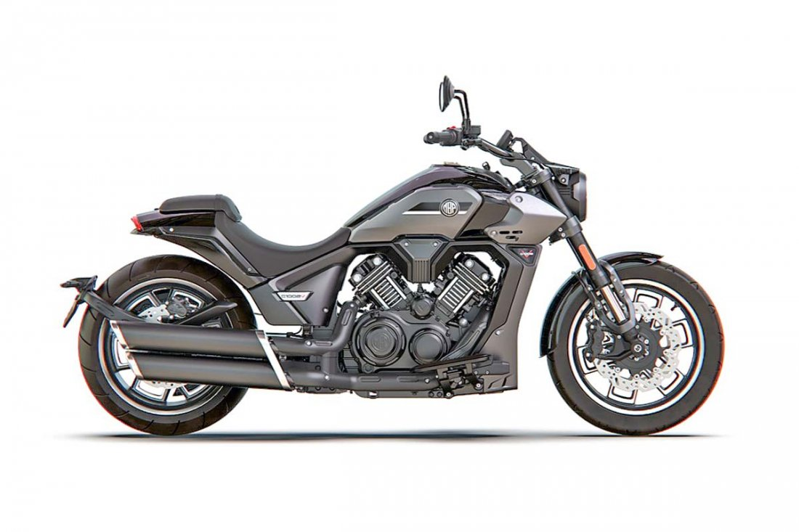

La estrategia de Forus para salir incólume de la crisis del retail
Categoría: Negocios | Empresas | Retail
Por qué la acción de la compañía propiedad de la familia Swett ha sido de las pocas del sector comercial que ha recuperado sus niveles previos al estallido social y la pandemia. La expresión phygital tiene mucho que ver.

A las 18 horas del jueves 18 de octubre de 2019, 24 horas antes de que se desatara el estallido social, la acción de la compañía de retail Forus cerró en $1.604,9 en la Bolsa de Santiago. Desde ese momento, sufrió un desplome provocado por la crisis social primero y luego por la sanitaria, que llevó al papel hasta un piso de $717.
Tras cuatro años grises, recién en diciembre del año pasado el papel se recuperó de manera consistente y se ha mantenido en torno a los niveles precrisis. El viernes cerró en $1.590, para una valorización bursátil total de US$429 millones.
Un repunte que no todos en su rubro han podido exhibir. Entre las empresas que cotizan en bolsa, Forus es una excepción junto a Cencosud y a SMU. Cadenas como Falabella, Ripley, La Polar, Hites o Tricot, o inmobiliarias vinculadas al retail como Mall Plaza, Parque Arauco y Cenco Malls (ex Cencosud Shopping), aún sufren, pues están lejos de los niveles bursátiles previos al estallido y la pandemia.
Un escenario que se explica en los niveles de ventas del comercio que, tras el boom provocado por los retiros de fondos previsionales y los subsidios estatales, mostraron 18 meses de caídas que recién culminaron en enero de este año. Y ese boom de los retiros fue insuficiente para que el valor de las firmas de retail recuperara los niveles previos a octubre de 2019.
por Ignacio Badal Zeisler, 20 de abril de 2024
|
Copec tiene hambre de crecer: comprará Streat Burger
Categoría: Negocios | Empresas
Hace años que la empresa de combustibles del grupo Angelini viene ampliando su portafolio de inversiones, con incursión en retail, energía e innovación. Para seguir la expansión, este mes cerrarán la compra de la cadena de hamburguesas fundada por Diego Desmadryl y Nicolás Lipthay en 2016.

La historia de Streat Burger comenzó a finales de 2014. Fue un llamado de Diego Desmadryl a Nicolás Lipthay con la siguiente frase: “quiero emprender en gastronomía, ¿vamos?” Después de eso vinieron meses de viajes por Madrid, Londres y Estados Unidos conociendo restaurantes, cadenas, cocinas y fábricas. Comieron como nunca, reconocerían después.
Lo que vino fue un éxito arrollador. Hoy tienen siete locales con sus hamburguesas y una línea de helados y otra de pollos. Pero fue el último local que abrieron, en la Copec de San Francisco de Mostazal en diciembre pasado, el que lo cambió todo. Fue un pololeo de seis meses, dicen conocedores del deal, y la prueba de fuego para seguir avanzando.
La empresa de combustibles ligada a la familia Angelini quedó tan encantada con la marca y la cultura que ofreció comprarlos. Por meses, equipos legales de ambos lados han estado negociando en la más absoluta reserva los detalles del acuerdo, el que está a punto de ser cerrado en las próximas semanas, pero que ya tiene el marco: Copec comprará la operación de Streat Burger, ampliando aún más su giro de negocios.
Por: Nicolás Durante y Juan Pablo Silva | Publicado: Sábado 20 de abril de 2024 a las 21:00
|
Hermanos Lessmann alistan debut en industria de las motos con marca italiana Morbidelli
Categoría: Negocios | Industria Automotriz
Una nueva incursión en la industria automotriz en Chile tendrá el apellido Lessmann. Esta vez se trata de la compañía Neus SpA, propiedad de los hermanos Sebastián, Eugenio y Cristóbal Lessmann, hijos de un histórico de esta industria, Ricardo Lessmann. Neus llegó a un acuerdo para distribuir en Chile la marca italiana de motos Morbidelli.

Esta legendaria marca, que en su historia estuvo muy relacionada con motos deportivas, hoy está justo siendo parte de un proceso de M&A por parte de la firma MBP Moto, fundada por Keeway Group, un conglomerado chino que anunció la adquisición de Morbidelli.
El aterrizaje en Chile de esta marca italiana ocurrirá a partir del segundo trimestre de este año, con unos nueve modelos que abarcan los segmentos de Scooter, Naked, Multipropósito y Custom.
“En un principio, partiremos con una casa matriz en Santiago, más cuatro distribuidores en la RM. En regiones tenemos considerado partir con dealer en La Serena, Calama, Viña del Mar, Concepción, Osorno y Temuco”, confirmó Sergio Tamayo, gerente comercial de Neus, quien indicó que esperan llegar a 11 puntos de venta a nivel nacional este año.
Esta marca italiana nació en 1968 de la mano de Giancarlo Morbidelli, un empresario dedicado al rubro industrial -específicamente, de maquinaria para trabajar en madera-, pero cuya pasión eran las motos, en particular las de competición.
Fuentes que conocen de ese proyecto precisan que Ricardo Lessmann no participa de este emprendimiento -que es de sus hijos, recalcan-, pues aún está vinculado a Automotores Gildemeister, la compañía de la marca Hyundai, entre varias, de la que fue parte por más de 30 años y que hoy está en manos de otros accionistas, pero de la que continúa siendo el presidente.
Por: Equipo DF MAS | Publicado: Sábado 20 de abril de 2024 a las 21:00
|